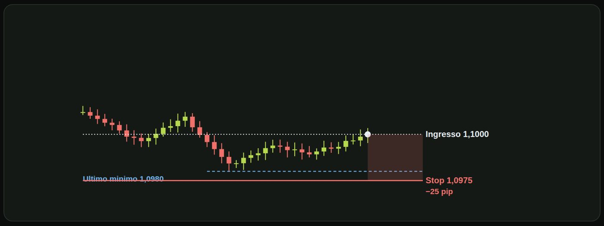
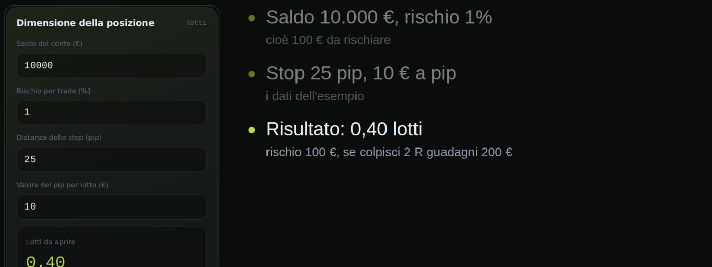
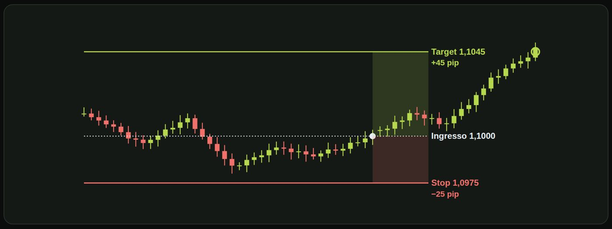
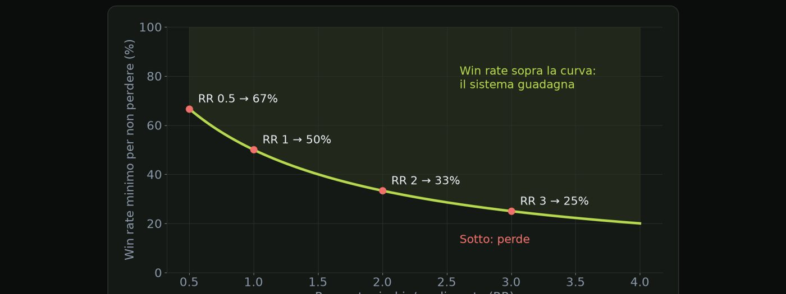

Materiale educativo, non consulenza finanziaria. Il trading con leva su forex, CFD e futures comporta un rischio elevato: puoi perdere tutto il capitale. Numeri, esempi e simulazioni non prevedono risultati futuri.
Due trader, la stessa strategia, due destini diversi.
La maggior parte delle persone pensa che il trading sia trovare la strategia giusta. Si studiano indicatori, pattern e segnali. E la domanda su quanto rischiare arriva dopo, quando arriva. Ed è l'ordine sbagliato.
| Drawdown tipico | −10% |
| Capitale dopo 200 trade | ×1,65 |
| Casi sotto −50% | ~0% |
| Drawdown tipico | −35% |
| Capitale dopo 200 trade | ×6,9 |
| Casi sotto −50% | ~10% |
Prendiamo due trader con la stessa identica strategia. Vince il 45 per cento delle volte; quando vince guadagna 1,8 volte quello che rischia, quando perde ne perde una. Simulati su duecento operazioni, questi sono i risultati tipici. Il trader B rischia l'1 per cento a operazione. Il suo peggior momento tipico è un meno 10 per cento, e dopo duecento trade il capitale è circa 1,65 volte l'iniziale. Il trader A rischia il 4 per cento. Sulla carta guadagna molto di più, fino a quasi sette volte il capitale. Ma il suo drawdown tipico è meno 35 per cento, e in un caso su dieci supera il meno 50. La domanda quindi non è chi guadagna di più. È: quanti riescono a sopportare un meno 35 per cento senza cambiare piano, senza raddoppiare, senza fermarsi nel momento sbagliato?
Il rischio per trade decide due cose. Se sopravvivi: un rischio troppo alto trasforma una normale serie di perdite in una rovina. E quanto soffri: anche senza rovina, un grande drawdown ti porta a sbagliare le decisioni. Il piano migliore sulla carta è inutile se non riesci a seguirlo.
Queste sono le tre domande a cui risponderemo, lezione dopo lezione. Quanto posso perdere al massimo su una singola operazione? Quante perdite di fila posso reggere? E quando mi fermo, prima che sia troppo tardi? Se alla fine hai tre risposte scritte e numeriche, hai fatto metà del lavoro.
| Dopo 5 perdite | −4,9% |
| Capitale da 10.000 € | 9.510 € |
| Dopo 5 perdite | −22,6% |
| Capitale da 10.000 € | 7.738 € |
Vediamo cosa significa nella pratica. Cinque perdite di fila sono normali in qualsiasi sistema. Con il rischio all'uno per cento, cinque perdite consecutive costano il 4,9 per cento: da diecimila euro scendi a 9.510. Si recupera senza drammi. Con il rischio al cinque per cento, le stesse cinque perdite costano il 22,6 per cento: da diecimila euro scendi a 7.738. Per tornare al punto di partenza serve un guadagno di quasi il 30 per cento. La serie di perdite è identica. Cambia solo quanto rischiavi. È la dimensione del rischio a trasformare una serie normale in un disastro.
Prima di chiederti quanto puoi guadagnare, chiediti quanto puoi perdere.
Quanto del capitale sei disposto a perdere su una singola operazione.
Il rischio di un'operazione è quanto perdi se va male, cioè se il prezzo raggiunge il tuo stop loss. Lo misuriamo in percentuale del capitale. Non in pip, e non in lotti. E si decide prima di entrare, mai a operazione già aperta.
| Capitale | 10.000 € |
| Rischio per trade | 1% |
| Perdita massima sul trade | 100 € |
| Rischio | Su 10.000 € | Per chi |
|---|---|---|
| 0,5% | 50 € | prudente, prop firm |
| 1% | 100 € | riferimento comune |
| 2% | 200 € | già alto |
| 5% | 500 € | molto aggressivo |
Non esiste il numero giusto per tutti: dipende dal sistema e da quanto drawdown reggi.
Tre errori da evitare. Rischiare di più dopo una perdita per rifarsi. Rischiare di più quando ci si sente sicuri di un trade. E non sapere quanto si rischia finché non si è già dentro. Il rischio si fissa prima, con un numero, ogni volta.
| Capitale | Rischio 1% |
|---|---|
| 10.000 € | 100 € |
| 12.000 € (dopo +20%) | 120 € |
| 8.000 € (dopo −20%) | 80 € |
Il rischio in % si adatta da solo: più piccolo quando perdi.
Il rischio è un numero che decidi prima, non un sentimento che provi dopo.
Dove si mette e perché non si sposta.
Lo stop loss non è il prezzo in cui ti fa male. È il prezzo in cui la tua idea è sbagliata. Trasforma una perdita ignota in una perdita nota. È lui che rende il rischio un numero. Senza stop non esiste un rischio per trade. Esiste solo la speranza.
Dove si mette? Oltre un livello che invalida l'idea: sotto un minimo, sopra un massimo, fuori da un range. Con un margine per il rumore. Il prezzo oscilla, e uno stop troppo vicino salta per caso. E soprattutto, non si sceglie in base a quanto vuoi rischiare. Prima si sceglie lo stop dove ha senso, e poi si adatta la dimensione dell'operazione.

Vediamolo su un grafico. Il prezzo scende, rimbalza e forma un minimo. Ecco l'ultimo minimo rilevante: uno virgola nove otto zero. Sotto quel livello, l'idea di acquisto non è più valida. Entri a uno virgola uno zero zero zero, dopo il rimbalzo. Lo stop va un po' sotto il minimo, a uno virgola zero nove sette cinque: venticinque pip di rischio. Il margine di cinque pip serve a non farti fermare dal rumore. Lo stop l'hai deciso guardando il grafico, non il portafoglio.
| 1. Dove invalida l'idea? | stop |
| 2. Quanto rischio? | 1% |
| 3. Quindi il lotto è | calcolato |
| 1. Lotto che mi piace | a occhio |
| 2. Stop dove «ci sta» | comodo |
| 3. Rischio | quel che viene |
Ci sono due modi di ragionare. Il modo giusto: prima chiedi dove l'idea è invalidata, quello è lo stop. Poi decidi quanto rischiare, per esempio l'uno per cento. E solo a quel punto il lotto viene calcolato di conseguenza. Il modo sbagliato: scegli un lotto che ti piace, metti lo stop dove ci sta comodo, e il rischio è quello che viene. Lo stop comanda, il lotto si adatta.
Una regola che protegge. Lo stop può essere stretto, ma mai allargato. Se il prezzo si avvicina, non spostarlo solo un po'. Ogni volta che lo fai, hai cambiato il rischio senza decidere. Se non sei pronto ad accettare quella perdita, la soluzione è non entrare.
| Ingresso long | 1,1000 |
| Ultimo minimo rilevante | 1,0980 |
| Margine per il rumore | 5 pip |
| Stop loss | 1,0975 |
| Distanza | 25 pip |
Lo stop non è il costo del trading. È il suo prezzo d'ingresso.
Dallo stop e dal rischio alla dimensione dell'operazione.
Tre parole da conoscere prima di calcolare. Il pip: la più piccola unità di movimento di uso comune. Sul cambio euro dollaro è la quarta cifra decimale. Il lotto: la dimensione dell'operazione. Un lotto standard sono centomila unità della valuta base. E il valore del pip: quanto guadagni o perdi per ogni pip di movimento. Su euro dollaro, con un lotto standard e un conto in dollari, vale circa dieci dollari.
Ecco la formula che collega tutto. I lotti si ottengono dividendo il rischio in euro per lo stop in pip moltiplicato per il valore del pip. Il rischio è quanto accetti di perdere, in euro. Lo hai deciso nella lezione uno punto due. Lo stop è la distanza tra ingresso e stop loss, in pip. L'hai deciso nella lezione precedente. Il valore del pip dipende dallo strumento: circa dieci per un lotto su euro dollaro. Il tuo broker o la tua piattaforma lo mostrano.
| Capitale | 10.000 € |
| Rischio per trade | 1% = 100 € |
| Stop | 25 pip |
| Valore del pip | 10 € per lotto |
| Lotti | 100 ÷ (25 × 10) |

Lo stesso calcolo, in un calcolatore. Dichiaro che questo è un mio strumento gratuito, sul sito riskly punto trade, ma ottieni lo stesso risultato con la formula, o con un foglio di calcolo. Inserisci il saldo di diecimila euro e il rischio all'uno per cento: sono cento euro da rischiare. Poi lo stop di venticinque pip e il valore del pip, dieci euro per lotto. Il risultato è zero virgola quaranta lotti, con un rischio di cento euro. E se arrivi a due R, ne guadagni duecento. Esattamente come nel nostro esempio svolto.
| Rischio | 100 € |
| Lotti | 0,40 |
| Rischio | 100 € |
| Lotti | 0,20 |
Cosa succede se lo stop è più largo? Con lo stop a venticinque pip, il lotto è zero virgola quaranta. Con lo stop a cinquanta pip, il lotto dimezza: zero virgola venti. Il rischio in euro è identico: cento. Cambia il lotto, non la perdita. Ecco perché lo stop comanda.
Tre controlli prima di cliccare. Il lotto si arrotonda per difetto, mai per eccesso. Il valore del pip deve essere quello del tuo strumento e della valuta del tuo conto: su un conto in euro non è esattamente dieci. E ricorda che spread e commissioni non sono dentro lo stop: il rischio reale è sempre un po' più alto di quello calcolato.
| Capitale | 20.000 € |
| Rischio per trade | 0,5% = 100 € |
| Stop | 40 pip |
| Lotti | 100 ÷ (40 × 10) |
Il lotto non si sceglie. Si calcola.
Quanto punti a guadagnare per ogni euro che rischi.
Il rapporto rischio rendimento, in breve RR, dice quanto punti a guadagnare per ogni unità che rischi. Si calcola dividendo il guadagno obiettivo, cioè la distanza tra ingresso e take profit, per il rischio, cioè la distanza tra ingresso e stop loss. Se rischi venticinque pip per puntarne quarantacinque, il rapporto è uno virgola otto.
| Ingresso | 1,1000 |
| Stop loss | 1,0975 (−25 pip) |
| Take profit | 1,1045 (+45 pip) |
| RR | 45 ÷ 25 |

Rivediamo il trade di prima sul grafico, questa volta con il target. Entri a uno virgola uno zero zero zero. Lo stop è venticinque pip sotto: rischi venticinque pip. Il target è quarantacinque pip sopra: puoi guadagnare quarantacinque pip. Il rapporto è la distanza verde divisa per quella rossa: quarantacinque diviso venticinque, uno virgola otto. E se il prezzo arriva al target, hai guadagnato quarantacinque pip, uno virgola otto volte quello che rischiavi. Se invece tocca lo stop, perdi venticinque pip.
Attenzione: un rapporto alto da solo non basta. Un take profit molto lontano si raggiunge meno spesso: più è ambizioso, più scende la percentuale di trade vincenti. All'opposto, con un RR basso devi vincere quasi sempre. Con RR zero virgola cinque serve vincere due volte su tre soltanto per pareggiare. Quello che conta è la combinazione tra RR e win rate, e la vediamo nella prossima lezione.
| Trade 1 | vinto +45 pip |
| Trade 2 | perso −25 pip |
| Trade 3 | perso −25 pip |
| Trade 4 | vinto +45 pip |
| Trade 5 | perso −25 pip |
| RR | Vinti su 10 | Pip guadagnati | Pip persi | Risultato |
|---|---|---|---|---|
| 3 | 3 | 3 × 75 = 225 | 7 × 25 = 175 | +50 pip |
| 2 | 4 | 4 × 50 = 200 | 6 × 25 = 150 | +50 pip |
| 1 | 5 | 5 × 25 = 125 | 5 × 25 = 125 | 0 pip |
Prima dei costi di spread e commissioni.
Non devi avere ragione spesso. Devi guadagnare di più quando ce l'hai.
Il win rate non dice niente senza il rapporto rischio/rendimento.
Il win rate è la percentuale di operazioni vinte sul totale. Quarantacinque vinte su cento sono un win rate del quarantacinque per cento. Da solo non dice se il sistema guadagna. Un settanta per cento può perdere soldi, un trentacinque per cento può guadagnarne. Va sempre letto insieme al rapporto rischio rendimento: è la coppia che decide.
Esiste una formula semplice: il win rate di pareggio. È la percentuale minima di vittorie sotto la quale il sistema perde. Si calcola come uno diviso uno più RR. Dove RR è il guadagno medio diviso la perdita media. Se vinci più spesso di così, guadagni; se vinci meno, perdi.
| RR | Pareggio |
|---|---|
| 0,5 | 67% |
| 1 | 50% |
| 1,5 | 40% |
| 2 | 33% |
| 3 | 25% |
Prima di spread e commissioni.

Lo stesso concetto in un grafico. Sulla curva il sistema è in pareggio. Sopra la curva, cioè con un win rate più alto, guadagna. Sotto perde. Più sali con il RR, più la soglia scende. Ma ricorda: un RR più alto spesso significa un win rate più basso, quindi devi controllare il tuo caso reale.
| Win rate misurato | 45% |
| RR medio | 1,8 |
| Pareggio con RR 1,8 | 1 ÷ 2,8 = 36% |
| Margine | 45% − 36% = 9 punti |
Il win rate da solo è una vanità. La coppia win rate e RR è un fatto.
Un linguaggio comune per ogni operazione, su ogni mercato.
Come confronti due operazioni? Una ha fatto più cinquanta pip con un lotto grosso, un'altra più venti pip con uno piccolo. Quale è andata meglio? Gli euro dipendono dal capitale e dal lotto che hai deciso quel giorno. I pip dipendono dallo strumento: cinquanta pip non valgono lo stesso su tutti i mercati.
La soluzione è misurare tutto in R. Un R è il rischio iniziale di quell'operazione, cioè la distanza dallo stop, espressa in valore. Ogni risultato diventa un multiplo di R. Più due R significa che hai guadagnato il doppio di quello che rischiavi. Se prendi lo stop, il risultato è meno un R. Sempre, a qualsiasi strumento e a qualsiasi dimensione. Negli esempi di prezzo continueremo a usare i pip, che sono più immediati. L'R lo useremo per le statistiche, dove serve confrontare operazioni con stop diversi.
| Trade | Euro | Pip | R |
|---|---|---|---|
| Oro, lotto 0,1 | +180 € | +60 | +1,8 R |
| EURUSD, lotto 0,4 | −100 € | −25 | −1 R |
| Indice, lotto 2 | +150 € | +30 | +1,5 R |
| GBPUSD, lotto 0,2 | −100 € | −50 | −1 R |
Rischio iniziale di 100 € per ogni trade.
| Trade 1 | +1,8 R |
| Trade 2 | −1 R |
| Trade 3 | +1,5 R |
| Trade 4 | −1 R |
| Trade 5 | −1 R |
Un solo linguaggio per tutti i trade
Misurare in R fa tre cose. Ti obbliga a definire il rischio prima di entrare, perché senza stop non esiste R. Ti permette di confrontare sistemi, strumenti e periodi senza farti ingannare dal capitale. E ti prepara al prossimo modulo: le statistiche di un sistema, come expectancy e profit factor, si calcolano tutte in R.
Se non sai quanto rischiavi, non sai quanto hai guadagnato.
Prova a risolverli senza guardare: le soluzioni sono nella pagina successiva.
| Capitale | 20.000 € |
| Rischio per trade | 2% |
| Domanda 1 | perdita massima su un trade? |
| Domanda 2 | capitale dopo 3 perdite di fila? |
| Capitale | 25.000 € |
| Rischio per trade | 0,5% |
| Domanda | quanto rischi in euro? |
| Rischio | 60 € |
| Stop | 30 pip |
| Domanda | quanto deve valere un pip? |
| Capitale | 5.000 € |
| Rischio | 2% |
| Stop | 20 pip |
| Valore pip | 10 € per lotto |
| Stop | 25 pip |
| Target | 50 pip (RR 2) |
| Operazioni | 10, di cui 4 vinte |
| Domanda | risultato in pip? |
| RR del sistema | 3 |
| Win rate misurato | 28% |
| Domanda | sei sopra o sotto il pareggio? |
| Risultati | +2 R, −1 R, −1 R, +0,5 R, −1 R, +3 R |
| Domanda | totale in R? E con R = 80 €? |
| Perdita sul trade | 2% di 20.000 = 400 € |
| Dopo 3 perdite | 20.000 × 0,98³ |
| Capitale | 18.824 € |
La perdita massima su un trade è il due per cento di ventimila: quattrocento euro. Dopo tre perdite, il capitale è ventimila per zero virgola novantotto alla terza: diciottomilaottocentoventiquattro euro. Hai perso 1.176 euro, cioè il 5,9 per cento, non il 6: le perdite si compongono, ogni volta il due per cento si applica a un capitale più piccolo.
| Calcolo | 25.000 × 0,005 |
Venticinquemila per zero virgola zero zero cinque: centoventicinque euro.
| Valore del pip | 60 ÷ 30 |
| Pip da 2 € = lotto | 0,2 |
Sessanta diviso trenta: due euro a pip. Con circa dieci euro a pip per un lotto, significa zero virgola due lotti. Nella prossima lezione trasformiamo questo ragionamento in una formula.
| Rischio in euro | 5.000 × 0,02 = 100 € |
| Lotti | 100 ÷ (20 × 10) |
Il rischio in euro è cento. Cento diviso venti per dieci fa zero virgola cinque. Mezzo lotto.
| 4 vinte | 4 × 50 = +200 pip |
| 6 perse | 6 × 25 = −150 pip |
Quattro vinte per cinquanta: duecento pip. Sei perse per venticinque: centocinquanta. Totale: più cinquanta pip.
| Pareggio | 1 ÷ (1 + 3) = 25% |
| Margine | 28% − 25% = +3 punti |
Il pareggio è uno diviso quattro: venticinque per cento. Sei a ventotto, quindi sopra di tre punti. Ma è un margine sottile: su pochi trade potrebbe essere solo rumore, ne parliamo nel modulo due.
| Somma | 2 − 1 − 1 + 0,5 − 1 + 3 |
| Totale | +2,5 R |
| In euro | 2,5 × 80 = 200 € |
Due meno uno meno uno fa zero; più zero virgola cinque fa mezzo; meno uno fa meno mezzo; più tre fa due virgola cinque. Totale più due virgola cinque R, che a ottanta euro per R sono duecento euro.
Spunta ogni punto solo se sapresti spiegarlo a voce a un altro trader.
Materiale educativo, non consulenza finanziaria. Il trading con leva su forex, CFD e futures comporta un rischio elevato: puoi perdere tutto il capitale. Numeri, esempi e simulazioni non prevedono risultati futuri. · riskly.trade